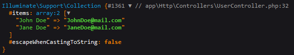

Mastering Laravel 10 Query Builder, Eloquent and Relationships
Migrations:
Column modifiers:
$col = $table->string('email');
$col->unique(); // unique column that can't have duplicates
$table->unique(['email', 'username']); // define multiple unique columns at once
$table->id()->from(startingValue: 5000); // changes the starting value of the autoincrement property.
// Equivalent to `ALTER TABLE tableName AUTO_INCREMENT = 5000;`
$table->bigIncrements('user_id'); // Custom primary key
// creating a foreign key manually:
$table->unsignedBigInteger('post_id'); // datatype for the foreign key
$table->foreign('post_id') // creates a foreign key `post_id`
->references('id')->on('posts') // refers to posts.id
->cascadeOnDelete();
// If a record in the parent table is deleted, all related records in the child table will also be automatically deleted.
// creating a foreign key (modern way):
$table->foreignId('post_id', model: Post::class)
// model is optional (automatically inferred but provide it when having weird names).
// or
$table->foreignId('post_id')->constrained('posts'); // Constrained by default sets up an `ON DELETE CASCADE` constraint.
$col->comment('message'); // adds a comment to your columns (visible on the database view software)
$col->default('any value'); // adds a default value to the column
$col->first(); // change order in the database
$col->nullable(default: true); // declares a column as nullable (accept null values)
art migrate:status => Show the status of each
migration.
art migrate:status --database[=DATABASE] => The
database connection to use.
art migrate:status --pending => Only list
pending migrations.
art migrate --pretend => Dump the SQL queries
that would be run, it
doesn’t actually run.
art migrate --force => Force the operation to
run when in production, all data is lost.
art migrate:reset => Rollback all database
migrations.
art migrate:rollback => Rollback the last
database migration.
art migrate:rollback --step[=STEP] => The number
of migrations to be reverted.
art migrate:fresh =>
Drop all tables and re-run all migrations.
art migrate:refresh =>
Reset (runs the down() method of
the migration) and re-run all migrations.
art migrate:refresh --step[=STEP] => The number
of migrations to be reverted & re-run.
art schema:dump => Dump the given database
schema (exports it to raw SQL).
art schema:dump --prune => Delete all existing
migration files and replace them with the SQL file.
art make:migration => Create a new migration
file.
art make:migration --create[=CREATE] => The
table to be created.
art make:migration --table[=TABLE] => The table
to migrate.
Migration naming conventions:
- adding a column:
add_email_in_users_table. -
rename a column:
rename_name_to_username_on_users_table. -
dropping a column:
drop_email_from_users_table. - adding a column:
add_email_in_users_table.
$table->softDeletes(); // Adds `deleted_at` timestamp.
$table->renameColumn(oldname: 'name', newname: 'fullName'); // Renames columns
$table->dropColumn('col1'); // Drop one column
$table->dropColumn(['votes', 'avatar', 'location']); // Drop multiple columns by passing an array of column names.
$table->dropSoftDeletes(); // Drop the `deleted_at` column.
$table->dropTimestamps(); // Drop the `created_at` and `updated_at` columns.Note: Utilize seeders for crucial and necessary data, whereas factories should be used for generating fake data for testing purposes.
Factories & Seeders:
// inside DatabaseSeeder.php
$this->call(Seeder::class); // run single seeder
$this->call([
UserSeeder::class,
PostSeeder::class
]); // run multiple seeders.Reading data from JSON files:
// 1. Create a JSON file in `database\json` and name it after the table name e.g. `users.json`.
// 2. Read the file content:
$json = File::get('database/json/users.json'); // returns the json text
// 3. convert it, there is two ways:
// First way:
$data = json_decode($json, associative: true); // returns an associative array with the content of the file
// Second way:
$data = collect(json_decode($json)); // convert to collection
// 4. Insert the data:
// First way:
foreach ($data as $item) { // loop over the assoc array
User::create($item);
}
// Second way:
$data->each(function ($item) { // loop over the collection with the callback
User::create([
"name" => $item->name,
"email" => $item->email,
"password" => $item->password,
]);
});Query Builder:
art db:table [<table>] => Display
information about the given database table.
Example: 
Reading Data:
$t = DB::table(table: 'users'); // Specify the table you are working on
$q1 = $t->select(columns: ["name", "email"]);
// Specify which columns to retrieve default is ["*"] (all columns).
$q1 = $t->get(); // Get the result as an array of rows
$t->select('name as username'); // Changes the output name of the column.
$t->distinct(); // Force the query to only return distinct results.
// if a value is repeated more than once, it will take only the first row
// that contains it.
$q2 = $t->select(['name', 'email']);
$q2->addSelect('password')->get();
// Adds more columns to your SELECT clause of a query. You MUST add the `get()`
// method to the last statement.
$q3 = $t->where(column: "id", value: 2); // where`id` = 2;
// This will select the user of id `1` only.
$q3->first(); // Get the first column that matches this clause. Returns an object not an array.
$q3->value(column: 'name'); // Returns a single value from the query.
// Useful when you only need one value from a record.
$q4 = $t->find(id: 1); // searches for a record by its primary key (id). returns an Object.
The pluck() method is used to retrieve a single
column’s value from the first result of a query. It takes two
arguments the first is the column that you want to
pluck the second an optional key to the values.
Returns an array.
pluck('name') method output:

pluck('email', 'name') method output:

Creating Data:
$t = DB::table(table: 'users'); // Specify the table you are working on
$data = [
"name" => "John Doe",
"email" => "JohnDoe@mail.com",
"password" => "password"
];
$t->insert($data); // Inserts a new record, timestamps are null Returns true on success
$t->insertOrIgnore($data); // returns 1 on success, returns 0 if existed.
// Allows you to insert data into a database table only if the data doesn't already exist in the table.
$values = [
'email' => 'john.doe@example.com',
'name' => 'John Doe updated',
'revenue' => 1000,
];
$uniqueBy = 'email';
$update = ['name', 'revenue'];
$t->upsert($values, $uniqueBy, $update);
// Insert new records or update the existing ones. Tries to insert first.
$t->insertGetId($data); // Insert new record and grab its id in a single query.Updating Data:
$t = DB::table(table: 'users'); // Specify the table you are working on
$q = DB::table('users')->where('id', 2); // Spcific row to operate on.
// Finds the user and updates its password field to `newPassword`.
$q->update(["password" => "newPassword"]);
// Returns the number of affected rows (int).
// Insert or update a record matching the attributes, and fill it with values.
// Tries to update first.
$t->updateOrInsert(
attributes: ['age' => 67],
values : [
"name" => "new user",
"email" => "newest@email.com",
"revenue" => 5000,
]
); // Searches for a row with the given `attributes` (age of 67).
// If it exists update it with the `values` array.
// Else create a new row with the two arrays combined.Deleting Data:
$t = DB::table(table: 'users'); // Specify the table you are working on
$q = DB::table('users')->where('id', 2); // Spcific row to operate on.Modifiers:
$t = DB::table(table: 'users'); // Specify the table you are working on.
$q = DB::table('users')->where('id', 2); // Spcific row to operate on.
$t->where(column: "id", value: 2); // where`id` = 2;
// This will select the user of id `1` only.
$t->where(column: 'type', operator: '!=', value: 'admin');
// The `where()` method takes three arguments: `column`, optional `operator` with default value of `==` and a value to compare against.
$t->orWhere(column: 'type', value: 'user');
// Use `orWhere()` method to match multiple records at once. Order matters.
// Always put where clause at the top of the query.
// The increment() and decrement() methods are used to increment or decrement
// the value of a column by a given amount, default 1.
$t->increment(column: 'age'); // Increments the `age` column by one
$t->decrement(column: 'revenue', amount: 1000); // Decrements the `revenue` column by 1000.
$q->incrementEach(['age' => 2, 'revenue' => 50]); // Increment the given column's values by the given amounts.Collections:
Collection class provides a fluent, convenient
wrapper for working with arrays of data. the
Collection class allows you to chain its methods to
perform fluent mapping and reducing of the underlying array. In
general, collections are immutable, meaning every
Collection method returns an entirely new
Collection instance.
the collect helper to create a new collection
instance from the given data:
$collection = collect(['taylor', 'abigail']); // creates a collection instance from the given value.
The each method iterates over the items in the
collection and passes each item to a closure:
$collection = collect([1, 2, 3, 4]);
$collection->each(function (int $item, int $key) {
// actual functionality...
});Miscellaneous:
art db:show => Shows current database
information.
art db:show --database=db_type => Shows info
about specific database, useful when having multiple db
connections. db type can be MySQL, SQLite, etc.
art tinker => Interact with your application,
runs a REPL interface to do database operations.
env('key', 'defaultValue'); // Helper function that retrieves the value of an environment variable or returns a default value.
Str::slug(string $title, string $separator = '-'); // Generate a URL friendly "slug" from a given string.
User::insert(); // Doesn't add timestamps automatically.
User::create(); // Adds timestamps automatically .